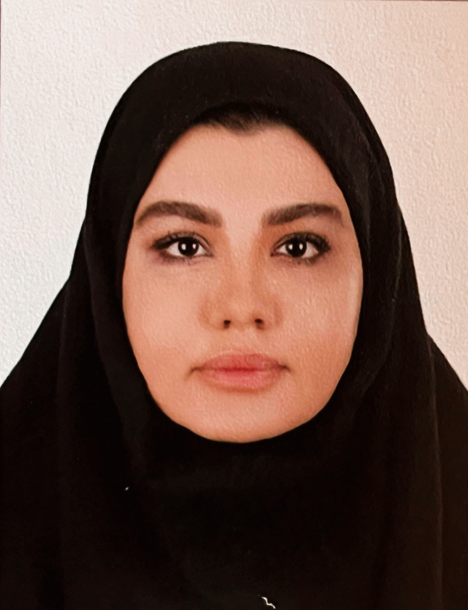

UNDERGRADUATE
B.Sc. in Applied Mathematics
Ferdowsi University of Mashhad
CompletedI am an Applied Mathematics graduate and a Data Science master’s student at Ferdowsi University of Mashhad. I am interested in using mathematical thinking, statistics and programming to understand data and solve meaningful problems.

01 / INTRODUCTION
Applied Mathematics · Data Science
My academic background is in Applied Mathematics, and I am currently pursuing an M.Sc. in Data Science at Ferdowsi University of Mashhad. I enjoy combining analytical thinking with programming to explore data, investigate patterns and develop practical solutions. This website brings together my academic background, technical skills, certificates and future projects.
Data analysis, statistical thinking, mathematical modelling and machine learning.
02 / ACADEMIC BACKGROUND
My academic path and current studies.
Ferdowsi University of Mashhad
CompletedFerdowsi University of Mashhad
In progress03 / TOOLKIT
Tools and technologies included in my current portfolio.
04 / AREAS TO EXPLORE
Finding patterns and communicating insights through data.
↗Applying quantitative reasoning to real-world questions.
↗Exploring computational methods for learning from data.
↗05 / PROFESSIONAL DEVELOPMENT
International Computer Driving Licence

Web design and development certification
Python programming certificate
07 / GET IN TOUCH
For academic opportunities, research collaboration or questions, feel free to get in touch.